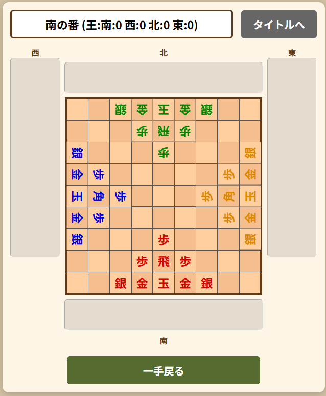

1. ゲームの概要
四人将棋は、9x9の盤面で4人のプレイヤーが同時に戦うサバイバル将棋です。戦略的な「王の獲得数」と「生存」が勝敗を分ける独自のルールを採用しています。
【対局の準備】
対局開始前に、各プレイヤーは自分の主力となる駒を「飛車」か「角行」のどちらかひとつ選んで配置します。これにより、プレイヤーごとに異なる戦術でゲームが始まります。

【初期配置図】
2. 勝利条件と順位
勝利の判定
- 決着時： 2人が脱落した時点で、最も多くの「王」を獲得していた人が勝者となります。
- サドンデス： 2人が脱落した際、残った二人の「王」の獲得数が同じ場合はサドンデスに突入します。その場合、最後まで生き残っていた人が勝者となります。
順位の決定
- 生存優先： 脱落していないことが最優先されます。
- 同条件内の比較： 「脱落していない人同士」または「脱落した人同士」の順位は、獲得した「王」の数で決まります。
3. 基本ルール
- 手番の順序： 南（自分）→ 西 → 北 → 東 の時計回りで進行します。
- 脱落： 自分の「玉」を取られたプレイヤーはその場で負けとなります。盤上の駒はグレーアウトされて動かすことはできなくなりますが、他のプレイヤーは通常の駒と同様に取って自分の持ち駒として使うことができます。
- 王の獲得： 相手の王を取ると、勝利判定に関わる「王」のカウントが増えます。ただし、王を持ち駒として盤面に打つことはできません。
4. 特殊ルール（重要）
① 成りのルール
自分から見て奥の3段（または3列）が「敵陣」となり、そこに駒が入るか、そこから出る際に駒を「成る」ことができます（南：1〜3段目、西：7〜9列目、北：7〜9段目、東：1〜3列目）。
② 落武者狩り
王を取られて脱落したプレイヤーの駒はグレーアウトされ、自ら動くことはありません。しかし、生存しているプレイヤーはその駒の位置に自分の駒を動かせば、通常通り駒を獲得し、自分の持ち駒として再利用することができます。
③ 二歩と行き所のない駒
- 二歩： 自分の歩がすでに置かれている列（歩の左右ではなく前後）に、新たに自分の歩を置くことはできません。
- 行き所のない駒： 次に動ける場所がない位置（例：南のプレイヤーが一番奥の1段目に歩を打つなど）には駒を打てません。
④ 千日手
- 千日手： 同一局面が3回現れる指し手は「千日手」となり、打つことができません。